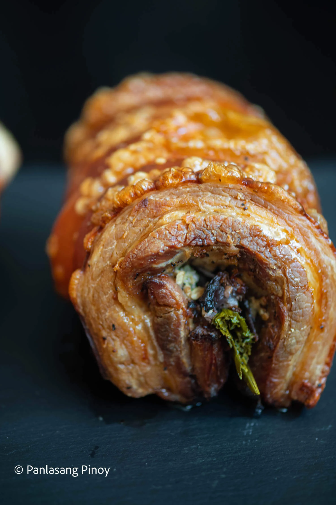

Lechon Belly

Description
Exceptionally delicious and juicy, there is nothing quite like a warm, fresh plate of Crispy Mini Lechon Belly Roll. This may be a dish you''tre used to ordering from outside for special occasions. But wouldn't it be great to know how to make it from scratch? After all, we never run short of Filipino celebrations where a gorgeous belly roll wouldn't fit perfectly on the dining table.
Ingredients
- 4 lbs pork belly
- 1 onion - sliced
- 1 head garlic - minced
- 1 bunch lemongrass
- 1 bunch green onion
- 3 tablespoon salt
- 1 ½ tablespoons ground black pepper
- 3 tablespoons cooking oil
Instructions
- Slice the pork belly in half. Lay it flat on a clean surface and then rub salt and ground black pepper on the side with meat.
- Spread the garlic over each piece of belly and arrange the sliced onion, lemongrass, and green onion.
- Roll the pork belly in a way that all ingredients remain inside. Make sure that both ends are touching. Securely tie the belly using a kitchen twine.
- Arrange the two pork belly rolls in a steamer. Steam for 45 minutes.
- Remove from the steamer and let it cool down for 15 minutes. Rub oil all over each belly roll.
- Arrange the belly rolls in a turbo broiler and then broil for 45 minutes.
- Slice and serve while still hot. Share and enjoy!